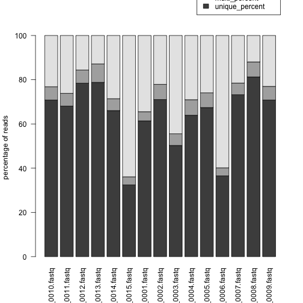

Visualizing Alignment Statistics
Sometimes it is helpful to visualize alignment statistics (ex: for quality control). Below we will see how we can make bar plot of alignment statistics in R. The data below is from a Single Cell RNA-Seq experiment (scRNA-Seq). Let's load in our initial data and take a look at it.
alignment_summary <- read.table('/Users/mohammedkhalfan/Work/alignment_stats.txt', header=TRUE)
head(alignment_summary)
## sample total not_aligned aligned_once
## 1 CE_1_10_CE_TC_sample_0010.fastq 402052 93214 284750
## 2 CE_1_11_CE_TC_sample_0011.fastq 2079397 544079 1415762
## 3 CE_1_12_CE_TC_sample_0012.fastq 529457 82655 415318
## 4 CE_1_13_CE_TC_sample_0013.fastq 1237519 159103 975089
## 5 CE_1_14_CE_TC_sample_0014.fastq 457252 130730 301983
## 6 CE_1_15_CE_TC_sample_0015.fastq 320291 204695 103874
## multi_aligned percent_mapped
## 1 24088 76.82
## 2 119556 73.83
## 3 31484 84.39
## 4 103327 87.14
## 5 24539 71.41
## 6 11722 36.09
Let's transform the stats we have into the stats we want to visualize (% uniquely mapped, % multi mapped, % unmapped)
alignment_summary$unique_percent <- (alignment_summary$aligned_once / alignment_summary$total)*100
alignment_summary$multi_percent <- (alignment_summary$multi_aligned / alignment_summary$total)*100
alignment_summary$unmapped_percent <- (alignment_summary$not_aligned / alignment_summary$total)*100
head(alignment_summary)
## sample total not_aligned aligned_once
## 1 CE_1_10_CE_TC_sample_0010.fastq 402052 93214 284750
## 2 CE_1_11_CE_TC_sample_0011.fastq 2079397 544079 1415762
## 3 CE_1_12_CE_TC_sample_0012.fastq 529457 82655 415318
## 4 CE_1_13_CE_TC_sample_0013.fastq 1237519 159103 975089
## 5 CE_1_14_CE_TC_sample_0014.fastq 457252 130730 301983
## 6 CE_1_15_CE_TC_sample_0015.fastq 320291 204695 103874
## multi_aligned percent_mapped unique_percent multi_percent
## 1 24088 76.82 70.82417 5.991265
## 2 119556 73.83 68.08522 5.749551
## 3 31484 84.39 78.44225 5.946470
## 4 103327 87.14 78.79386 8.349528
## 5 24539 71.41 66.04301 5.366625
## 6 11722 36.09 32.43113 3.659797
## unmapped_percent
## 1 23.18456
## 2 26.16523
## 3 15.61128
## 4 12.85661
## 5 28.59036
## 6 63.90907
Now we have all the data we need. Let's get just the columns we want
counts = data.matrix(alignment_summary[7:9])
head(counts)
## unique_percent multi_percent unmapped_percent
## [1,] 70.82417 5.991265 23.18456
## [2,] 68.08522 5.749551 26.16523
## [3,] 78.44225 5.946470 15.61128
## [4,] 78.79386 8.349528 12.85661
## [5,] 66.04301 5.366625 28.59036
## [6,] 32.43113 3.659797 63.90907
We need to transpose the matrix to plot it as a barplot
counts = t(counts)
head(counts)
## [,1] [,2] [,3] [,4] [,5]
## unique_percent 70.824172 68.085219 78.44225 78.793861 66.043013
## multi_percent 5.991265 5.749551 5.94647 8.349528 5.366625
## unmapped_percent 23.184563 26.165230 15.61128 12.856611 28.590362
## [,6] [,7] [,8] [,9] [,10] [,11]
## unique_percent 32.431133 61.393143 71.029980 50.27456 63.933189 67.41334
## multi_percent 3.659797 4.141265 6.875452 5.25703 7.025292 6.64696
## unmapped_percent 63.909070 34.465592 22.094568 44.46841 29.041519 25.93970
## [,12] [,13] [,14] [,15]
## unique_percent 36.518466 73.201486 81.259087 70.828835
## multi_percent 3.641995 5.290887 6.789712 6.151838
## unmapped_percent 59.839539 21.507627 11.951202 23.019326
Finally, let's plot our chart!
barplot(counts, names.arg=alignment_summary$sample,las=2,ylab='percentage of reads',legend.text=rownames(counts),args.legend=list(y=125))

From the bar plot above, we can see that samples 6 and 15 have poor alignment rates relative to the rest of the library. We may want to classify these as outliers and remove them from our downstream analysis.